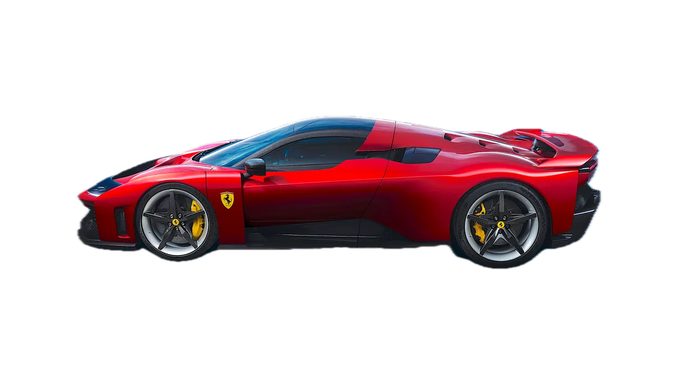

Ferrari F80
Ferrari F80 — концепт гиперкара, призванного продолжить традиции Ferrari LaFerrari.
Модель отличается футуристичным дизайном и гибридной технологией.

Характеристики
- Двигатель: гибрид V8 + электромоторы
- Мощность: ~1200 л.с. (по концепту)
- Разгон 0–100 км/ч: ~2.2 с
- Максимальная скорость: более 500 км/ч (по слухам)